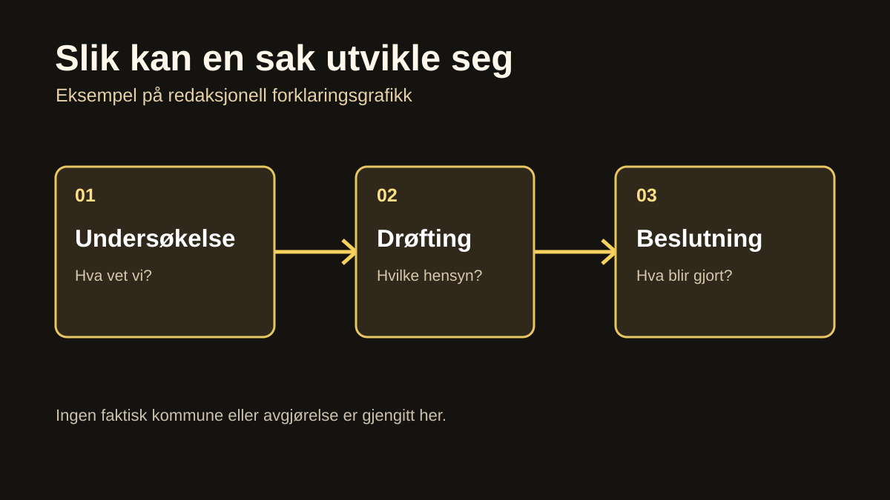
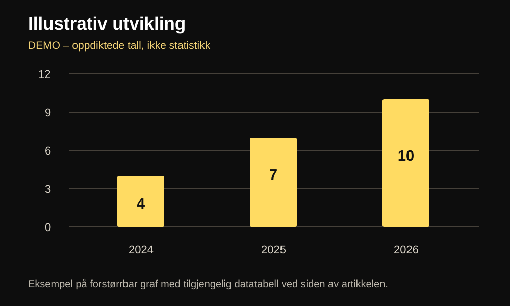

Internt redaksjonelt eksempel · Ikke publisert artikkel
En artikkel skal kunne leses – og utforskes
Dette er en fungerende demonstrasjon av Paradisavisas felles artikkelutforming. Avstemning, faktaboks, forstørrbar graf, tidslinje og forklaringssteg vises sammen uten å miste en rolig leserytme.

Den beste artikkelen har én tydelig fortelling, men gir leseren muligheten til å gå dypere. Et tall kan få sin egen graf. En tidsrekke kan utforskes steg for steg. Et komplisert begrep kan forklares uten at hovedteksten stopper opp.
Også kildene hører til leseflyten: under et faktabærende avsnitt kan vi gi en kort, synlig henvisning i stedet for å samle all dokumentasjon nederst. Se den kanoniske artikkelstandarden for konkrete regler.
Redaksjonell standard: ARTIKKELSTANDARD.md (internt eksempel på en avsnittskilde).
Hva betyr «kanonisk artikkelmal»?
Det betyr at alle sjangrene bruker samme lesestruktur og komponenter. Det er teksten, dokumentasjonen og det redaksjonelle behovet som bestemmer hvilke moduler som faktisk legges inn.
Faktaboksen kan åpnes med berøring, mus eller tastatur. Den skjuler forklaringen uten å fjerne den fra artikkelen.
En avstemning kan få leseren til å reflektere. Samtidig må avisa være åpen om hva et slikt skjema faktisk registrerer. På en statisk side kan vi demonstrere et personlig valg uten å påstå at det finnes en felles opptelling.
Hva ville du utforsket videre?
Demonstrasjonsavstemning. Valget lagres bare i denne nettleseren. Det sendes ikke inn, og det vises ingen felles resultater.
Du valgte:
Ditt svar er ikke sendt til noen offentlig opptelling.
Når en graf ligger i teksten, skal den tåle et raskt blikk på en iPad – men også kunne forstørres og leses med datatabell. Den må ha tittel, enhet, dato og en oppgitt kilde til de faktiske verdiene.
En graf som kan forstørres


Vis tallene som tabell
| År | Eksempelverdi |
|---|---|
| 2024 | 4 |
| 2025 | 7 |
| 2026 | 10 |
Kilde: Illustrasjonsdata skrevet til denne demoen. Ingen reell datakilde.
En tidslinje kan samle dokumenterte hendelser uten å gjøre alle datoene til mellomtitler. Leseren kan åpne de hendelsene som trenger forklaring, og la resten stå sammenfoldet.
Tidslinje: Slik bygges en artikkel
Demonstrasjonstrinn – ikke en historisk tidslinje.
Undersøk hendelsen
Finn dokumenter og bekreft hva som faktisk er kjent. Oppgi kilde når tidslinjen beskriver en reell hendelse.
Sett opplysningene i sammenheng
Forklar bakgrunn, motforestillinger og uavklarte spørsmål. Ikke gjør en hypotese til faktum.
Vis konsekvens og oppfølging
Skill mellom vedtak, foreslåtte tiltak og det som faktisk har skjedd etterpå.
Noen ganger er det ikke en kronologi leseren trenger, men forståelse av hvordan en mekanisme virker. Da kan en trinnvis forklaring gi mer enn enda et avsnitt.
Utforsk forklaringen trinn for trinn
Trykk på hvert steg for å se hva leseren trenger å forstå. Alle stegene er lesbare også uten JavaScript.
Ikke alle artikler trenger alle modulene. Et godt oppslag kan bestå av en sterk tekst, et meningsbærende bilde og noen presise kildelenker. En lang forklaringssak kan bruke flere moduler, men bare når de gir leseren mer å forstå.
Dokumentasjon for denne demonstrasjonen
Alle eksempler og tall er laget for demonstrasjonen. Avstemningen er lokal; den teller ikke stemmer fra andre lesere.